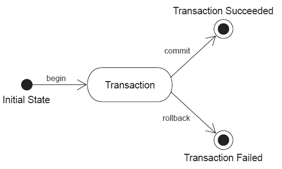

Informações
| Tipo: | Tutorial |
|---|---|
| Data de Publicação: | 27/08/2006 |
| Revisado em: | 27/08/2006 |
Vote!
Tags Relacionadas
Comentários ( 9 )
Imprimir
Transações com Hibernate
por:
Raphaela Galhardo Fernandes (raphaela@jeebrasil.com.br)
Gleydson Lima (gleydson@jeebrasil.com.br)
Nste artigo serão apresentados alguns conceitos relacionados a transações, bem como as mesmas são implementadas com o framework Hibernate.
Introdução
Uma transação é uma unidade de execução indivisível (ou atômica). Isso significa dizer que todas as etapas pertencentes a uma transação são completamente finalizadas ou nenhuma delas termina.
Para exemplificar o conceito de transações, considere um exemplo clássico de transferência entre contas bancárias: transferir R$ 150,00 da conta corrente do cliente A para a conta corrente do cliente B. Basicamente, as operações que compõem a transação são:
- Debitar R$ 150,00 da conta corrente do cliente A
- Creditar R$ 150,00 na conta corrente do cliente B
Para a efetivação da transação descrita acima, seria necessário seguir os seguintes passos:
- Ler o saldo da conta corrente A (xA)
- Calcular o débito de R$ 150,00 da conta corrente A (dA = xA – 150,00)
- Gravar na base de dados o novo saldo da conta corrente A (xA = dA)
- Ler o saldo da conta corrente B (xB)
- Calcular o crédito de R$ 150,00 na conta corrente B (dB = xB + 150,00)
- Gravar na base de dados o novo saldo da conta corrente B (xB = dB)
Caso ocorra algum problema (por exemplo: falta de energia, falha no computador, falha no programa, etc.), a execução dos passos anteriores pode ser interrompida. Se, por exemplo, houvesse interrupção logo após a execução do 3º passo, a conta A teria um débito de R$ 150,00 e ainda não teria sido creditado R$ 150,00 na conta corrente B. Neste caso, o banco de dados estaria em um estado inconsistente, afinal, R$ 150,00 teriam “sumido” da conta A sem destino. Dessa maneira, é de suma importância garantir que esses seis passos sejam totalmente executados. Caso haja alguma falha antes da conclusão do último passo, deve-se garantir também que os passos já executados serão desfeitos, de forma que ou todos os passos são executados ou todos os passos não são executados. Para garantir a consistência do banco, esses seis passos devem ser executados dentro de uma transação, já que ela é uma unidade de execução atômica.
Resumindo, uma transação garante que a seqüência de operações dentro da mesma seja executada de forma única, ou seja, na ocorrência de erro em alguma das operações dentro da transação todas as operações realizadas desde o início podem ser revertidas e as alterações no banco de dados desfeitas, garantindo assim, a unicidade do processo. A transação pode ter dois fins: commit ou rollback.
Quando a transação sofre commit, todas as modificações nos dados realizadas pelas operações presentes na transação são salvas. Quando a transação sofre rollback, todas as modificações nos dados realizadas pelas operações presentes na transação são desfeitas.
Para que um banco de dados garanta a integridade dos seus dados deve possuir quatro características, conhecidas como ACID:
- Atomicidade: o banco de dados deve garantir que todas as transações sejam indivisíveis.
- Consistência: após a execução de uma transação, o banco de dados deve continuar consistente, ou seja, deve continuar com um estado válido.
- Isolamento: mesmo que várias transações ocorram paralelamente (ou concorrentemente), nenhuma transação deve influenciar nas outras. Resultados parciais de uma transação não devem ser "vistos" por outras transações executadas concorrentemente.
- Durabilidade: após a finalização de uma transação, todas as alterações feitas por ela no banco de dados devem ser duráveis, mesmo havendo falhas no sistema após a sua finalização.
Modelos de Transações
As definições do início de uma transação, de seu fim e das ações que devem ser tomadas na ocorrência de falhas são feitas através de um modelo de transação. Existem diversos modelos encontrados na literatura. Nesta seção serão abordados apenas quatro: Flat Transactions, Nested Transactions, Chained Transactions e Join Transactions.
- Flat Transaction. Modelo mais utilizado pela maioria dos Sistemas Gerenciadores de Banco de Dados (SGBD) e Gerenciadores de Transações. Conhecida como modelo de transações planas por apresentar uma única camada de controle, ou seja, todas as operações dentro da transação são tratadas como uma única unidade de trabalho.
- Nested Transaction. Este modelo, também conhecido como Modelo de Transações Aninhadas, possibilita que uma transação possa ser formada por várias sub-transações. Em outras palavras, uma única transação pode ser dividida em diversas unidades de trabalho, com cada unidade operando independente uma das outras. A propriedade de atomicidade é válida para as sub-transações. Além disso, uma transação não pode ser validada até que todas as suas sub-transações tenham sido finalizadas. Se uma transação for interrompida, todas as suas sub-transações também serão. O contrário não é verdadeiro, já que se uma sub-transação for abortada a transação que a engloba pode: ignorar o erro; desfazer a sub-transação; iniciar uma outra sub-transação.
- Chained Transaction. Também conhecido como Modelo de Transações Encadeadas, esse modelo tem como objetivo desfazer as operações de uma transação em caso de erro com a menor perda de trabalho possível. Uma transação encadeada consiste em um conjunto de sub-transações executadas seqüencialmente, em que à medida que as sub-transações vão sendo executadas, são validadas e não podem mais ser desfeitas. Os resultados do conjunto de transações só serão visíveis ao final da execução de todas elas.
- Join Transaction. Esse modelo permite que duas transações sejam unidas em um só, de forma que todos os recursos passam a ser compartilhados.
Transações e Banco de Dados
Uma transação de banco de dados é formada por um conjunto de operações que manipulam os dados. A atomicidade de uma transação é garantida por duas operações: commit e rollback.
Os limites das operações de uma transação devem ser demarcados. Assim, é possível saber a partir de qual operação a transação é iniciada e em qual operação ela finalizada. Ao final da execução da última operação que pertence à transação, todas as alterações no banco de dados realizadas pelas operações que compõe a transação devem ser confirmadas, ou seja, um commit é realizado. Se houver algum erro durante a execução de algumas das suas operações, todas as operações da transação que já foram executadas devem ser desfeitas, ou seja, um rollback é realizado. A Figura 1 ilustra esses conceitos.

Figura 1 - Estados do sistema durante uma transação
Ambientes Gerenciados e Não Gerenciados
As seções seguintes referem-se às definições dos conceitos relacionados a transações JDBC e JTA, onde aparecem os termos ambientes gerenciados e não gerenciados. Esta seção destina-se a explicar sucintamente o que são esses termos.
Os ambientes gerenciados são aqueles caracterizados pela gerência automática de transações realizadas por algum container. Exemplos de ambientes gerenciados são componentes EJB (Enteprise JavaBeans) executando em servidores de aplicações (JBoss, Geronimo, etc). Já os ambientes não gerenciados são cenários onde não há nenhuma gerência de transação, como por exemplo: Servlets, aplicações desktop, etc..
Transações JDBC
A tecnologia JDBC (Java Database Connectivity) é um conjunto de classes e interfaces escritas em Java, ou API, que realiza o envio de instruções SQL (Structured Query Language) para qualquer banco de dados relacional.
Uma transação JDBC é controlada pelo gerenciador de transações SGBD e geralmente é utilizada por ambientes não gerenciados. Utilizando um driver JDBC, o início de uma transação é feito implicitamente pelo mesmo. Embora alguns bancos de dados necessitem invocar uma sentença "begin transaction" explicitamente, com a API JDBC não é preciso fazer isso. Uma transação é finalizada após a chamada do método commit(). Caso algo aconteça de errado, para desfazer o que foi feito dentro de uma transação, basta chamar o método rollback(. Ambos, commit() e rollback(), são invocados a partir da conexão JDBC.
A conexão JDBC possui um atributo auto-commit que especifica quando a transação será finalizada. Se este atributo for definido como true, ou seja, se na conexão JDBC for invocado setAutoCommit(true), ativa-se o modo de auto commit. O modo auto commit significa que para cada instrução SQL uma nova transação é criada e o commit é realizado imediatamente após a execução e finalização da mesma, não havendo a necessidade de após cada transação invocar explicitamente o método commit().
Em alguns casos, uma transação pode envolver o armazenamento de dados em vários bancos de dados. Nessas situações, o uso apenas do JDBC pode não garantir a atomicidade. Dessa maneira, é necessário um gerenciador de transações com suporte a transações distribuídas. A comunicação com esse gerenciador de transações é feita usando JTA (Java Transaction API).
Transações JTA
As transações JTA são usadas em um ambiente gerenciável, onde existem transações CMT (Container Managed Transactions). Neste tipo de transação não há a necessidade de programação explícita das delimitações das transações, esta tarefa é realizada automaticamente pelo próprio container. Para isso, é necessário informar nos descritores dos EJBs a necessidade de suporte transacional às operações e como ele deve gerenciá-lo.
O gerenciamento de transações é feito pelo Hibernate a partir da interface Transaction.
API para Transações do Hibernate
A interface Transaction fornece métodos para a declaração dos limites de uma transação. A Listagem 1 apresenta um exemplo de uso de transações com a interface Transaction.
A transação é iniciada a partir da invocação ao método session.beginTransaction(). No caso de um ambiente não gerenciado, uma transação JDBC na conexão JDBC é iniciada. Já no caso de um ambiente gerenciado, uma nova transação JTA é criada, caso não exista nenhuma já criada. Casa já existe uma transação JTA, essa nova transação une-se a existente.
A chamada ao método tx.commit() faz com que os dados em memória sejam sincronizados com a base de dados. O Hibernate só realiza efetivamente o commit se o comando beginTransaction() iniciar uma nova transação (em ambos ambientes gerenciado ou não gerenciado). Se o beginTransaction() não iniciar uma nova transação (no caso de transações JTA isso é possível), então o estado em sessão é apenas sincronizado com o banco de dados e a finalização da transação é feita de acordo com a primeira parte do código fonte que a criou.
Se ocorrer algum erro durante a execução do método acaoExecutada(), o método tx.rollback() é executado, desfazendo o que foi feito até o momento em que o erro ocorreu.
Observa-se que no final do código a sessão é finalizada a partir do comando session.close(), liberando a conexão JDBC e devolvendo-a para o pool de conexões.
Session session = sessions.openSession();
Transaction tx = null;
try {
tx = session.beginTransaction();
acaoExecutada();
tx.commit();
} catch (Exception e) {
if (tx != null) {
try {
tx.rollback();
} catch (HibernateException he) {
//log he and rethrow e
}
}
} finally {
try {
session.close();
} catch (HibernateException he) {
throw he;
}
}
Listagem 1 - Usando a Interface Transaction do Hibernate
Flushing
Flushing é o processo de sincronizar os dados em sessão (ou em memória) com o banco de dados. As mudanças nos objetos de domínio em memória feitas dentro do escopo de uma sessão (Session) não são imediatamente propagadas para o banco de dados. Isso permite ao Hibernate unir um conjunto de alterações e fazer um número mínimo de interações com o banco de dados, ajudando a minimizar a latência na rede.
A operação de flushing ocorre apenas em três situações: quando é dado commit na transação, algumas vezes antes de uma consulta ser executada (em situações que alterações podem influenciar em seu resultado) e quando o método Session.flush() é invocado.
O HIbernate possui um modo flush que pode ser definido a partir do comando session.setFlushMode(). Este modo pode assumir os seguintes valores:
- FlushMode.AUTO: valor padrão. Faz com que o Hibernate não realize o processo de flushing antes de todas as consultas, somente realizará se as mudanças dentro da transação alterar seu resultado.
- FlushMode.COMMIT: especifica que os estados dos objetos em memória somente serão sincronizados com a base de dados ao final da transação, ou seja, quando o método commit() é chamado.
- FlushMode.NEVER: especifica que a sincronização só será realizado diante da chamada explícita ao método flush().
Níveis de Isolamento de uma Transação
As bases de dados tentam assegurar que uma transação ocorra de forma isolada, ou seja, mesmo que estejam acontecendo outras transações simultaneamente, é como se ela estivesse ocorrendo sozinha.
O nível de isolamento de uma transação especifica que dados estão visíveis a uma sentença dentro de uma transação. Eles impactam diretamente no nível de acesso concorrente a um mesmo alvo no banco de dados por transações diferentes.
Geralmente, o isolamento de transações é feito usando locking, que significa que uma transação pode bloquear temporariamente um dado para que outras transações não o acessem no momento que ela o está utilizando. Muitos bancos de dados implementam o nível de isolamento de uma transação através do modelo de controle concorrente multi-versões (MCC – Multiversion Concorrency Control).
Dentre alguns fenômenos que podem ocorrer devido à quebra de isolamento de uma transação estão três:
- Dirty Read (Leitura Suja): uma transação tem acesso a dados modificados por uma outra transação ainda não finalizada que ocorre concorrentemente. Isso pode causar problema, pois pode ocorrer um erro dentro da transação que está modificando os dados e as suas alterações serem desfeitas antes de confirmadas, então é possível que a transação que acessa os dados já modificados esteja trabalhando se baseando em dados incorretos.
- Nonrepeatable Read (Leitura que não pode ser repetida): uma transação lê mais de uma vez um mesmo dado e constata que há valores distintos em cada leitura. Por exemplo, uma transação A lê uma linha do banco; uma transação B modifica essa mesma linha e é finalizada (commit) antes que a transação A; a transação A lê novamente esta linha e obtém dados diferentes.
- Phantom Read (Leitura Fantasma): em uma mesma transação uma consulta pode ser executada mais de uma vez e retornar resultados diferentes. Isso pode ocorrer devido a uma outra transação realizar mudanças que afetem os dados consultados. Por exemplo, uma transação A lê todas as linhas que satisfazem uma condição WHERE; uma transação B insere uma nova linha que satisfaz a mesma condição antes da transação A ter sido finalizada; a transação A reavalia a condição WHERE e encontra uma linha "fantasma" na mesma consulta feita anteriormente.
Existem quatro níveis de isolamento da transação em SQL. Eles se diferenciam de acordo com a ocorrência ou não dos fenômenos anteriormente descritos, como mostrado na Tabela 1.
| Nível de Isolamento | Dirty Read | Nonrepeatable | Planthon Read |
|---|---|---|---|
| Read Uncommited | SIM | SIM | SIM |
| Read Commited | NÃO | SIM | SIM |
| Repeatable Read | NÃO | NÃO | SIM |
| Serializable | NÃO | NÃO | NÃO |
Tabela 1 - Níveis de Isolamento
A escolha do nível de isolamento Read Uncommited não é recomendada para banco de dados relacionais, já que permite ler inconsistências e informações parciais (mudanças realizadas por uma transação ainda não finalizada podem ser lidas por outra transação). Se a primeira transação não for concluída, mudanças na base de dados realizadas pela segunda transação podem deixá-la com um estado inconsistente.
Com o nível Read Commited, uma transação somente visualiza mudanças feitas por outras transações quando confirmadas, permitindo que transações só acessem estados consistentes do banco. No caso de uma atualização/exclusão de uma linha de alguma tabela por uma transação, pode ser que a mesma tenha acabado de ser modificada por uma transação concorrente. Nesta situação, a transação que pretende atualizar fica esperando a transação de atualização que iniciou primeiro ser efetivada ou desfeita. Se as atualizações da primeira transação forem desfeitas, seus efeitos serão desconsiderados e a segunda transação efetivará suas mudanças considerando a linha da tabela anteriormente lida. Caso contrário, a segunda transação irá ignorar a atualização caso a linha tenha sido excluída ou aplicará a sua atualização na versão atualizada da linha.
O nível Repeatable Read não permite que uma transação sobrescreva os dados alterados por uma transação concorrente. Uma transação pode obter uma imagem completa da base de dados quando iniciada. Este nível é ideal para a geração de relatórios, pois em uma mesma transação, um registro é lido diversas vezes e seu valor se mantém o mesmo até que a própria transação altere seu valor.
Em relação ao nível Serializable, ele fornece o nível de isolamento de transação mais rigoroso. Ele permite uma execução serial das transações, como se todas as transações fossem executadas uma atrás da outra. Dessa forma, pode-se perder um pouco da performance da aplicação.
Configurando o nível de isolamento
No Hibernate cada nível de isolamento é identificado por um número:
- 1: Read Uncommited
- 2: Read Commited
- 4: Repeatable Read
- 8: Serializable
Para configurá-lo basta incluir a linha presente na Listagem 2 no arquivo de configuração *.cfg.xml. Neste exemplo, o nível de isolamento foi definido como Repeatable Read.
hibernate.connection.isolation = 4
Listagem 2 - Configuração do Nível de Isolamento
Referências
- Christian Bauer e Gavin King. Hibernate in Action. 2005.
- Grupo Hibernate. Hibernate Reference Documentation. Version 3.0.5. Obtido em http://www.hibernate.org
- Gleydson de Azevedo Ferreira Lima. Material Didático. 2005.
- Nick Heudecker. Introdução ao Hibernate.
- Maurício Linhares. Introdução ao Hibernate 3.
- Francesc Rosés Albiol. Introducción a Hibernate. 2003.
- Fabiano Kraemer, Jerônimo Jardel Vogt. Hibernate, um Robusto Framework de Persistência Objeto-Relacional. 2005.
Comentários (9)
- Excelente artigo, parabéns!
- postado por David Pereira em 17/09/2006 às 23:21
- muito massa este artigo, estava precisando de algo assim pra meu projeto, parabens!1
- postado por Fernando em 07/10/2006 às 23:21
- da hora, este artigo, muito bem citado os conceitos...
- postado por darlan em 10/10/2006 às 23:21
- Excelente. o tópico poderia ser Transação sem Hibernate. Parabéns!
- postado por João Paulo em 09/11/2006 às 23:21
- Excelente. Parabens
- postado por Rita Fernandes em 23/01/2007 às 23:21
- Muito bom mesmo, meu esclareceu muitas coisas.Obrigado
- postado por Lígia em 26/03/2007 às 23:21
- Muito bom. Parabéns
- postado por Warley em 30/07/2007 às 23:21
- Oláaa pessoalll.... alguem pode me explicar o que significa JEE? é voltada para que tipo de desenvolvimento? Obrigado Willian
- postado por Willia Amaral em 17/09/2007 às 23:21
- JEE significa Java Enterprise Edition. Nada mais é do que uma plataforma para desenvolvimento Java voltado para sistemas empresariais.
- postado por Anderson Rodrigues Ferreira em 26/10/2008 às 23:21